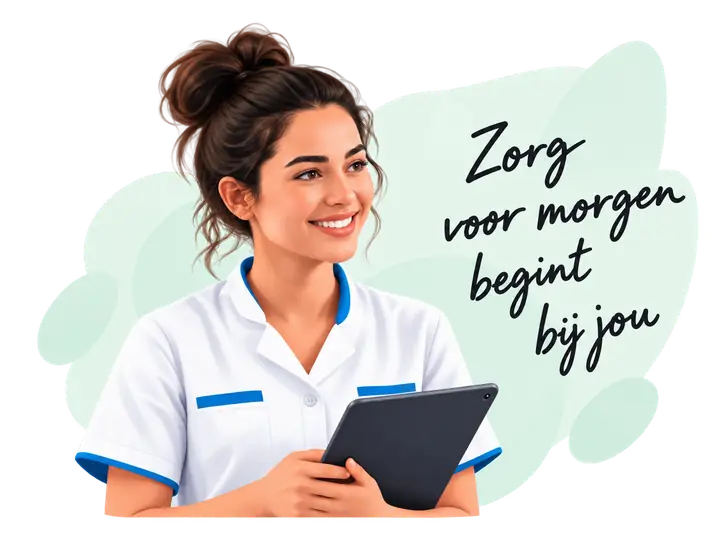

Betrokken en verantwoordelijk
Je neemt je werk serieus en zorgt goed voor onze cliënten en opdrachtgevers.
Bij Zorgpunt Connect werken we met betrokken en professionele zorgverleners. We geloven in kwaliteit, betrouwbaarheid en een prettige samenwerking. Hieronder ziet u wat wij belangrijk vinden en welk profiel goed past bij onze organisatie en partners.

Je neemt je werk serieus en zorgt goed voor onze cliënten en opdrachtgevers.
Je komt afspraken na en kunt goed omgaan met veranderingen.
Je hebt de juiste kennis, vaardigheden en instelling voor de functie.
Je communiceert duidelijk en respectvol met cliënten, collega’s en opdrachtgevers.
Je werkt goed in teamverband en draagt bij aan een positieve werksfeer.
Je hebt oog voor de behoeften van de cliënt en handelt met empathie.
Met jouw inzet en persoonlijkheid kun je echt het verschil maken. We kijken ernaar uit om, hopelijk, samen te werken!